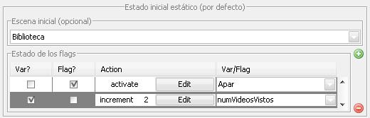

Estado inicial
El estado inicial nos permite cargar una escena inicial entre las
escenas del capítulo y dar valores a variables y flags sin tener que
cumplir ninguna condición o estado del LMS. Simplemente con que el
perfil esté vinculado al capítulo se realizarán las acciones que en la
siguiente tabla se detallan:

-
Escena inicial: Escena en la que empezará el capítulo que tenga
asignado este perfil de adaptación.
-
Estado de los Flags: Valores que tomarán las variables y flags.
Se pueden definir nuevas variables y flags simplemente escribiendo el
nombre. Para las variables se pueden incrementar/decrementar el valor
que tengan al inicio del capítulo o darles un valor directamente